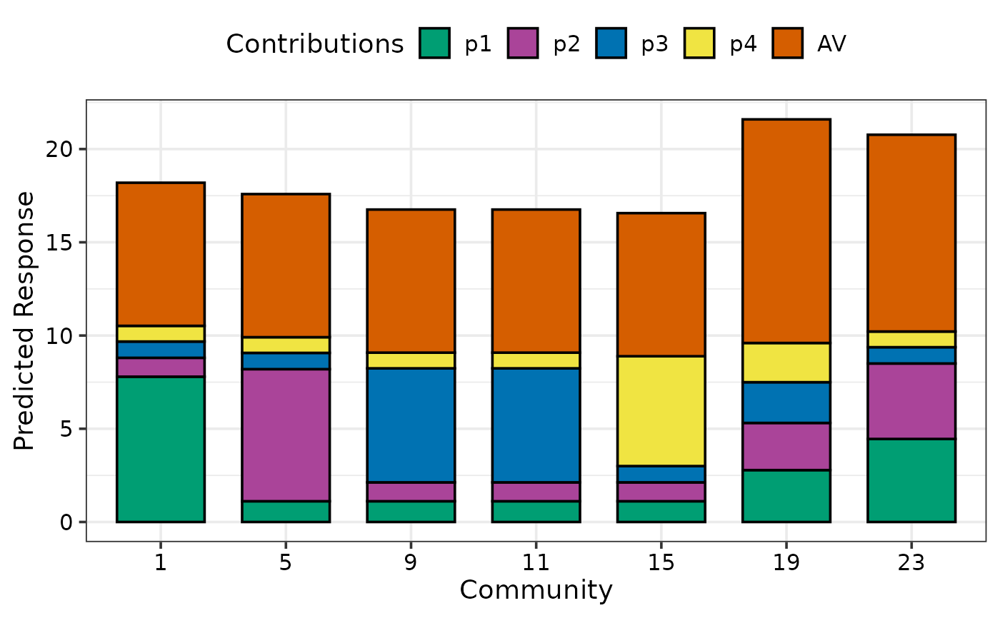
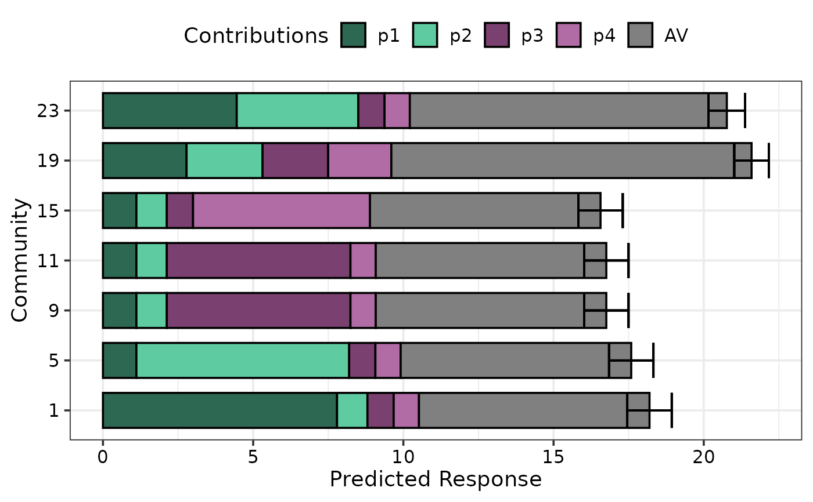
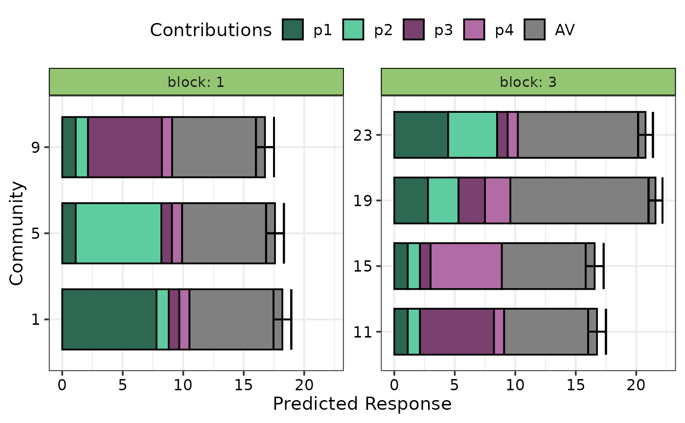
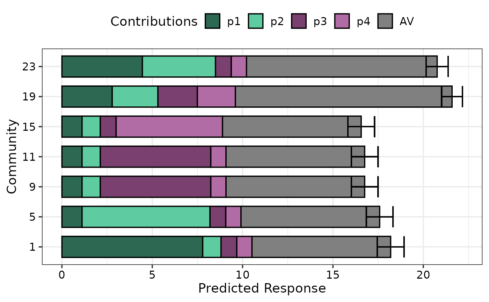
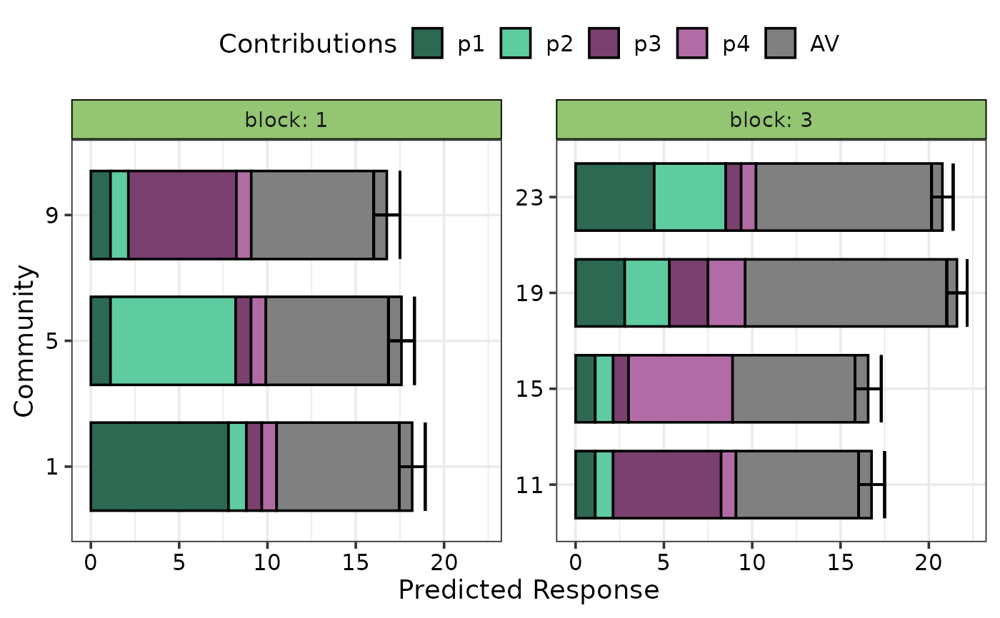

Visualise model term contributions to predicted response
prediction_contributions_plot.RdThe plotting function to visualise the predicted response from a regression model as a stacked bar-chart showing the contributions (predictor coefficient * predictor value) of each model term to the total predicted value (represented by the total height of the bar). Requires the output of the `prediction_contributions_data` as an input in the `data` parameter.
Usage
prediction_contributions_plot(
data,
colours = NULL,
se = FALSE,
bar_orientation = c("vertical", "horizontal"),
facet_var = NULL,
nrow = 0,
ncol = 0
)Arguments
- data
A data-frame which is the output of the `prediction_contributions_data` function, consisting of the predicted response split into the contributions by the different coefficients.
- colours
A character vector specifying the colours for the contributions of the different coefficients. If not specified, a default colour-scheme would be chosen, however it could be uninformative and it is recommended to manually choose contrasting colours for each coefficient group to render a more informative plot.
- se
A logical value indicating whether to show prediction intervals for predictions in the plot.
- bar_orientation
One of "vertical" or "horizontal" indicating the orientation of the bars. Defaults to a vertical orientation.
- facet_var
A character string or numeric index identifying the column in the data to be used for faceting the plot into multiple panels.
- nrow
Number of rows in which to arrange the final plot (when `add_var` is specified).
- ncol
Number of columns in which to arrange the final plot (when `add_var` is specified).
Value
A ggmultiplot (ggplot if single plot is returned) class object or data-frame (if `plot = FALSE`)
Examples
library(DImodels)
library(dplyr)
## Load data
data(sim2)
sim2$AV <- DI_data_E_AV(data = sim2, prop = 3:6)$AV
## Fit model
mod <- glm(response ~ 0 + (p1 + p2 + p3 + p4 + AV), data = sim2)
## Create data for plotting
plot_data <- prediction_contributions_data(data = sim2[c(1,5,9,11,15,19,23), ],
model = mod)
#> ✔ Finished data preparation.
## Create plot
prediction_contributions_plot(data = plot_data)
#> Warning: No colours were specified for the response contributions.
#> ℹ The default colours might not result in an informative
#> plot, consider choosing specific colours to contrast
#> the contributions of different groups in the response.
#> This warning is displayed once per session.
#> ✔ Created plot.

## Choose distinct colours for groups of coefficients for better visibility
ID_cols <- get_colours(4, FG = c("G", "G", "H", "H"))
int_cols <- "#808080"
cols <- c(ID_cols, int_cols)
## Specify colours using `cols`
prediction_contributions_plot(data = plot_data, colours = cols)
#> ✔ Created plot.
 ## Show prediction intervals
prediction_contributions_plot(data = plot_data, colours = cols, se = TRUE)
#> ✔ Created plot.
## Change orientation of bars using `bar_orientation`
prediction_contributions_plot(data = plot_data, colours = cols,
se = TRUE, bar_orientation = "horizontal")
#> ✔ Created plot.

## Facet plot based on a variable in the data
prediction_contributions_plot(data = plot_data, colours = cols,
se = TRUE, bar_orientation = "horizontal",
facet_var = "block")
#> ✔ Created plot.

## If multiple plots are desired `add_var` can be specified during
## data preparation and the plots can be arranged using nrow and ncol
sim2$block <- as.character(sim2$block)
new_mod <- update(mod, ~. + block, data = sim2)
plot_data <- prediction_contributions_data(data = sim2[c(1,5,9,11,15,19,23), c(3:6, 8)],
model = new_mod,
add_var = list("block" = c("1", "2")))
#> ✔ Finished data preparation.
## Arrange in two columns
prediction_contributions_plot(data = plot_data, ncol = 2)
#> ✔ Created all plots.
## Show prediction intervals
prediction_contributions_plot(data = plot_data, colours = cols, se = TRUE)
#> ✔ Created plot.
## Change orientation of bars using `bar_orientation`
prediction_contributions_plot(data = plot_data, colours = cols,
se = TRUE, bar_orientation = "horizontal")
#> ✔ Created plot.

## Facet plot based on a variable in the data
prediction_contributions_plot(data = plot_data, colours = cols,
se = TRUE, bar_orientation = "horizontal",
facet_var = "block")
#> ✔ Created plot.

## If multiple plots are desired `add_var` can be specified during
## data preparation and the plots can be arranged using nrow and ncol
sim2$block <- as.character(sim2$block)
new_mod <- update(mod, ~. + block, data = sim2)
plot_data <- prediction_contributions_data(data = sim2[c(1,5,9,11,15,19,23), c(3:6, 8)],
model = new_mod,
add_var = list("block" = c("1", "2")))
#> ✔ Finished data preparation.
## Arrange in two columns
prediction_contributions_plot(data = plot_data, ncol = 2)
#> ✔ Created all plots.